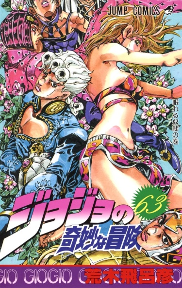

Тип: Манга
Тома: 17
Главы: 155
Статус: 1995-1999 г.г.
Жанры: Экшен Приключения Сёнен
По-японски: ジョジョの奇妙な冒険 黄金の風
По-английски: JoJo's Bizarre Adventure Part 5: Golden Wind

Золотой ветер/Golden Wind
Информация
Описание
Место действия переносится в Италию. А главным героем её становится Джорно Джованна — юный, но весьма амбициозный парень, являющийся ни много ни мало сыном знаменитого по предыдущим аркам Дио Брандо. Однако, в отличие от своего отца, Джорно избрал совсем иной путь и определённо другие средства к достижению своей мечты. Он решается занять место крёстного отца, главы итальянской мафии, и установить железный контроль над беззаконием и криминалом. Но основная загвоздка в том, что в мафии почему-то опять все главные люди со способностями, а у некоторых даже волшебные стрелы имеются. На своём пути к вершинам власти он столкнётся со множеством возможных союзников, ещё большим количеством противников, узнает множество тайн и решит немало загадок.
Персонажи
Аниме
Читать